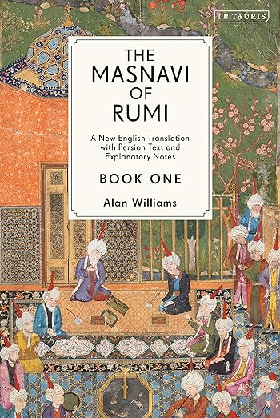
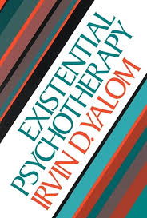
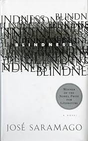

This summer, I took my first trip to Disney World in Orlando. Stepping into the park, I felt like entering a world of magic and my childhood nostalgia. It made me feel like a kid again.
| Cover | Author | Summary |
|---|---|---|
|
Paulo Coelho | A journey of self-discovery following a shepherd as he pursues his personal legend. |
|  | Rumi | The Masnavi of Rumi is a spiritual and philosophical epic poem that explores the deeper meanings of love, faith, and the soul. |
|  | Irvin Yalom | An exploration of existential psychology, focusing on human experiences of death, freedom, isolation, and meaning. |
|  | José Saramago | A novel exploring the collapse of society after a sudden epidemic of blindness strikes. |